Code
source("../dsan-globals/_globals.r")
set.seed(5300)DSAN 5300: Statistical Learning
Spring 2025, Georgetown University
source("../dsan-globals/_globals.r")
set.seed(5300)\[ \DeclareMathOperator*{\argmax}{argmax} \DeclareMathOperator*{\argmin}{argmin} \newcommand{\bigexp}[1]{\exp\mkern-4mu\left[ #1 \right]} \newcommand{\bigexpect}[1]{\mathbb{E}\mkern-4mu \left[ #1 \right]} \newcommand{\definedas}{\overset{\text{defn}}{=}} \newcommand{\definedalign}{\overset{\phantom{\text{defn}}}{=}} \newcommand{\eqeventual}{\overset{\text{eventually}}{=}} \newcommand{\Err}{\text{Err}} \newcommand{\expect}[1]{\mathbb{E}[#1]} \newcommand{\expectsq}[1]{\mathbb{E}^2[#1]} \newcommand{\fw}[1]{\texttt{#1}} \newcommand{\given}{\mid} \newcommand{\green}[1]{\color{green}{#1}} \newcommand{\heads}{\outcome{heads}} \newcommand{\iid}{\overset{\text{\small{iid}}}{\sim}} \newcommand{\lik}{\mathcal{L}} \newcommand{\loglik}{\ell} \DeclareMathOperator*{\maximize}{maximize} \DeclareMathOperator*{\minimize}{minimize} \newcommand{\mle}{\textsf{ML}} \newcommand{\nimplies}{\;\not\!\!\!\!\implies} \newcommand{\orange}[1]{\color{orange}{#1}} \newcommand{\outcome}[1]{\textsf{#1}} \newcommand{\param}[1]{{\color{purple} #1}} \newcommand{\pgsamplespace}{\{\green{1},\green{2},\green{3},\purp{4},\purp{5},\purp{6}\}} \newcommand{\prob}[1]{P\left( #1 \right)} \newcommand{\purp}[1]{\color{purple}{#1}} \newcommand{\sign}{\text{Sign}} \newcommand{\spacecap}{\; \cap \;} \newcommand{\spacewedge}{\; \wedge \;} \newcommand{\tails}{\outcome{tails}} \newcommand{\Var}[1]{\text{Var}[#1]} \newcommand{\bigVar}[1]{\text{Var}\mkern-4mu \left[ #1 \right]} \]
library(tidyverse)── Attaching core tidyverse packages ──────────────────────── tidyverse 2.0.0 ──
✔ dplyr 1.1.4 ✔ readr 2.1.5
✔ forcats 1.0.0 ✔ stringr 1.5.1
✔ lubridate 1.9.3 ✔ tibble 3.2.1
✔ purrr 1.0.2 ✔ tidyr 1.3.1
── Conflicts ────────────────────────────────────────── tidyverse_conflicts() ──
✖ dplyr::filter() masks stats::filter()
✖ dplyr::lag() masks stats::lag()
ℹ Use the conflicted package (<http://conflicted.r-lib.org/>) to force all conflicts to become errorsad_df <- read_csv("assets/Advertising.csv") |> rename(id=`...1`)New names:
Rows: 200 Columns: 5
── Column specification
──────────────────────────────────────────────────────── Delimiter: "," dbl
(5): ...1, TV, radio, newspaper, sales
ℹ Use `spec()` to retrieve the full column specification for this data. ℹ
Specify the column types or set `show_col_types = FALSE` to quiet this message.
• `` -> `...1`long_df <- ad_df |> pivot_longer(-c(id, sales), names_to="medium", values_to="allocation")
long_df |> ggplot(aes(x=allocation, y=sales)) +
geom_point() +
facet_wrap(vars(medium), scales="free_x") +
geom_smooth(method='lm', formula="y ~ x") +
theme_dsan()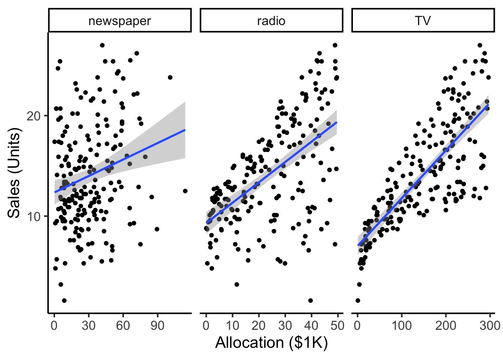
For now, we treat Newspaper, Radio, TV advertising separately: how much do sales increase per $1 into [medium]? (Later we’ll consider them jointly: multiple regression)
Our model:
\[ Y = \underbrace{\param{\beta_0}}_{\mathclap{\text{Intercept}}} + \underbrace{\param{\beta_1}}_{\mathclap{\text{Slope}}}X + \varepsilon \]
This model generates predictions via
\[ \widehat{y} = \underbrace{\widehat{\beta_0}}_{\mathclap{\small\begin{array}{c}\text{Estimated} \\[-5mm] \text{intercept}\end{array}}} ~+~ \underbrace{\widehat{\beta_1}}_{\mathclap{\small\begin{array}{c}\text{Estimated} \\[-4mm] \text{slope}\end{array}}}\cdot x \]
Note how these predictions will be wrong (unless the data is perfectly linear)
We’ve accounted for this in our model (by including \(\varepsilon\) term)!
But, we’d like to find estimates \(\widehat{\beta}_0\) and \(\widehat{\beta}_1\) that produce the “least wrong” predictions: motivates focus on residuals…
What can we optimize to ensure these residuals are as small as possible?
N <- 21
x <- seq(from = 0, to = 1, by = 1 / (N - 1))
y <- x + rnorm(N, 0, 0.25)
mean_y <- mean(y)
spread <- y - mean_y
sim_lg_df <- tibble(x = x, y = y, spread = spread)
sim_lg_df |> ggplot(aes(x=x, y=y)) +
geom_abline(slope=1, intercept=0, linetype="dashed", color=cbPalette[1], linewidth=g_linewidth) +
# geom_segment(xend=x, yend=x, linewidth=g_linewidth*2, color=cbPalette[2]) +
geom_segment(aes(xend=x, yend=x, color=ifelse(y>x,"Positive","Negative")), linewidth=1.5*g_linewidth) +
geom_point(size=g_pointsize) +
# coord_equal() +
theme_dsan("half") +
scale_color_manual("Spread", values=c("Positive"=cbPalette[3],"Negative"=cbPalette[6]), labels=c("Positive"="Positive","Negative"="Negative")) +
labs(
title = "Regression Line"
)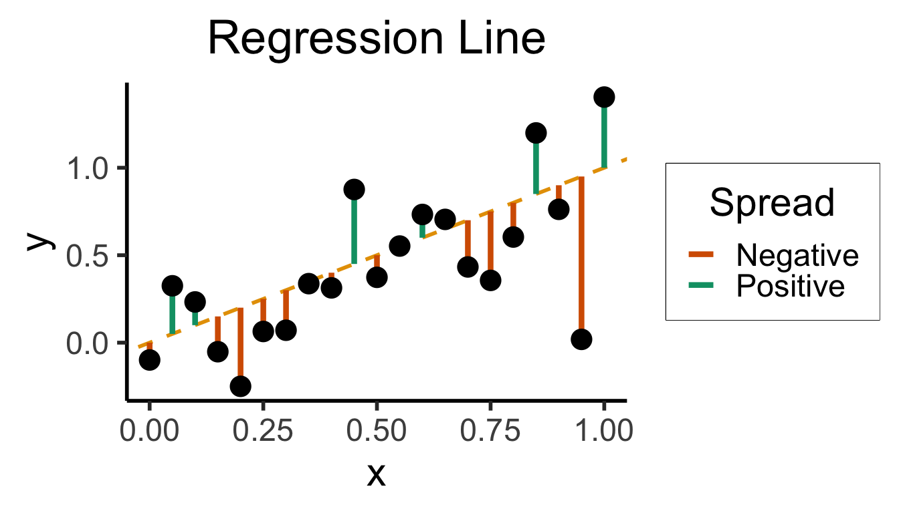
large_sum <- sum(sim_lg_df$spread)
writeLines(fmt_decimal(large_sum))0.0000000000large_sqsum <- sum((sim_lg_df$spread)^2)
writeLines(fmt_decimal(large_sqsum))3.5486713665N <- 21
x <- seq(from = 0, to = 1, by = 1 / (N - 1))
y <- x + rnorm(N, 0, 0.05)
mean_y <- mean(y)
spread <- y - mean_y
sim_sm_df <- tibble(x = x, y = y, spread = spread)
sim_sm_df |> ggplot(aes(x=x, y=y)) +
geom_abline(slope=1, intercept=0, linetype="dashed", color=cbPalette[1], linewidth=g_linewidth) +
# geom_segment(xend=x, yend=x, linewidth=g_linewidth*2, color=cbPalette[2]) +
geom_segment(aes(xend=x, yend=x, color=ifelse(y>x,"Positive","Negative")), linewidth=1.5*g_linewidth) +
geom_point(size=g_pointsize) +
# coord_equal() +
theme_dsan("half") +
scale_color_manual("Spread", values=c("Positive"=cbPalette[3],"Negative"=cbPalette[6]), labels=c("Positive"="Positive","Negative"="Negative")) +
labs(
title = "Regression Line"
)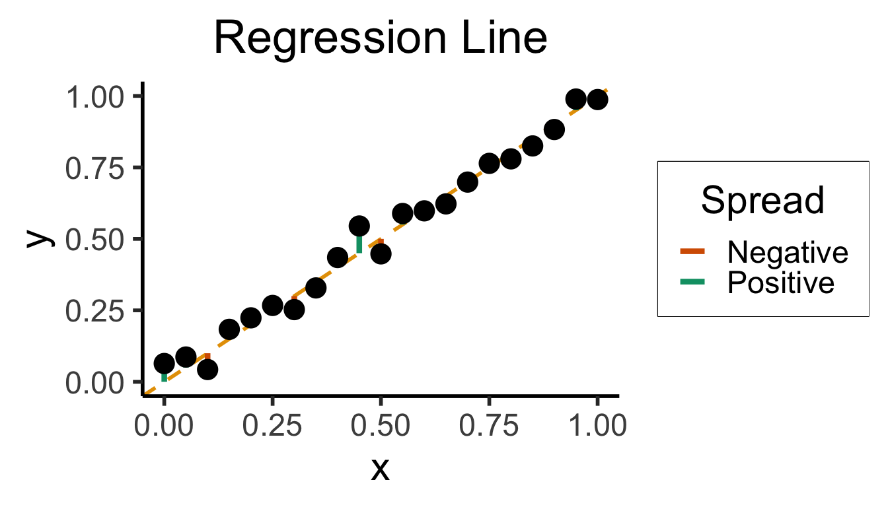
small_rsum <- sum(sim_sm_df$spread)
writeLines(fmt_decimal(small_rsum))-0.0000000000small_sqrsum <- sum((sim_sm_df$spread)^2)
writeLines(fmt_decimal(small_sqrsum))1.8480000946library(latex2exp)
x2_label <- latex2exp("$f(x) = x^2$")Warning in latex2exp("$f(x) = x^2$"): 'latex2exp' is deprecated.
Use 'TeX' instead.
See help("Deprecated") and help("latex2exp-deprecated").ggplot(data.frame(x=c(-4,4)), aes(x=x)) +
stat_function(fun=~ .x^2, linewidth = g_linewidth) +
dsan_theme("quarter") +
labs(
title=x2_label,
y="f(x)"
)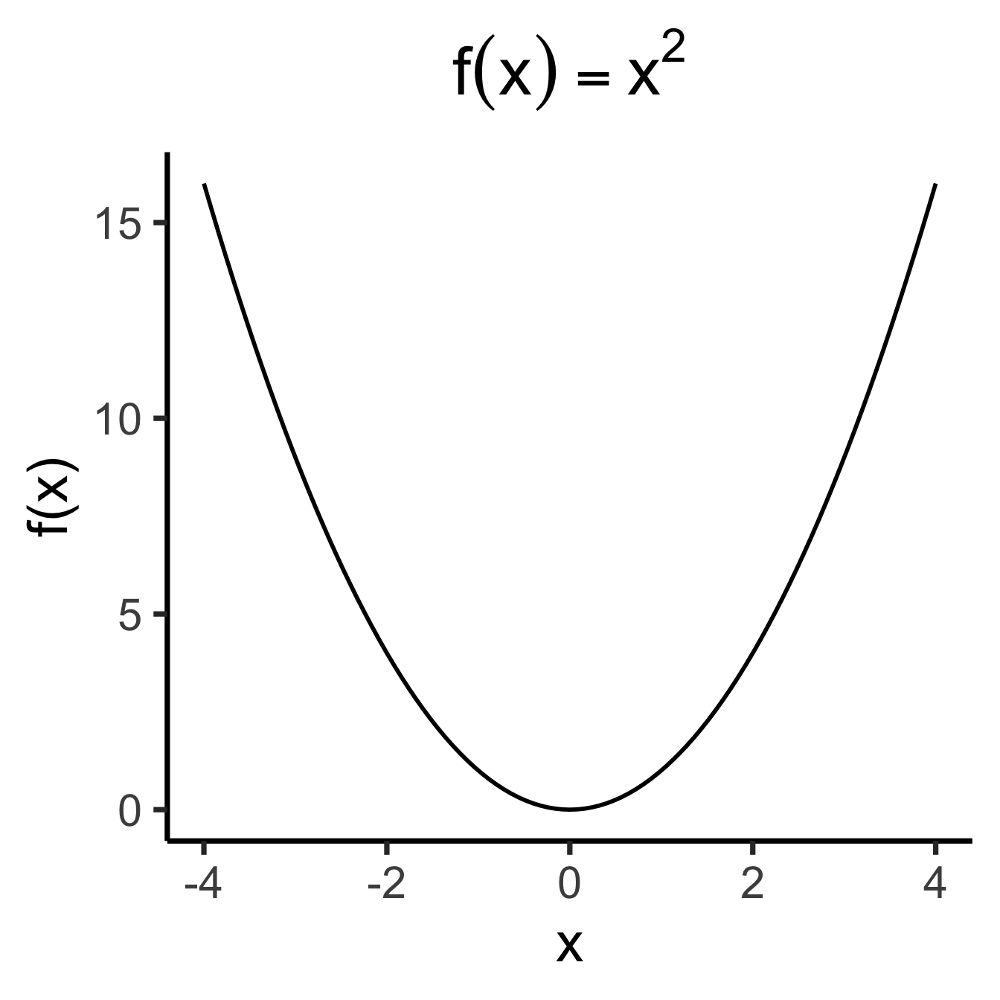
# Could use facet_grid() here, but it doesn't work too nicely with stat_function() :(
ggplot(data.frame(x=c(-4,4)), aes(x=x)) +
stat_function(fun=~ abs(.x), linewidth=g_linewidth) +
dsan_theme("quarter") +
labs(
title="f(x) = |x|",
y="f(x)"
)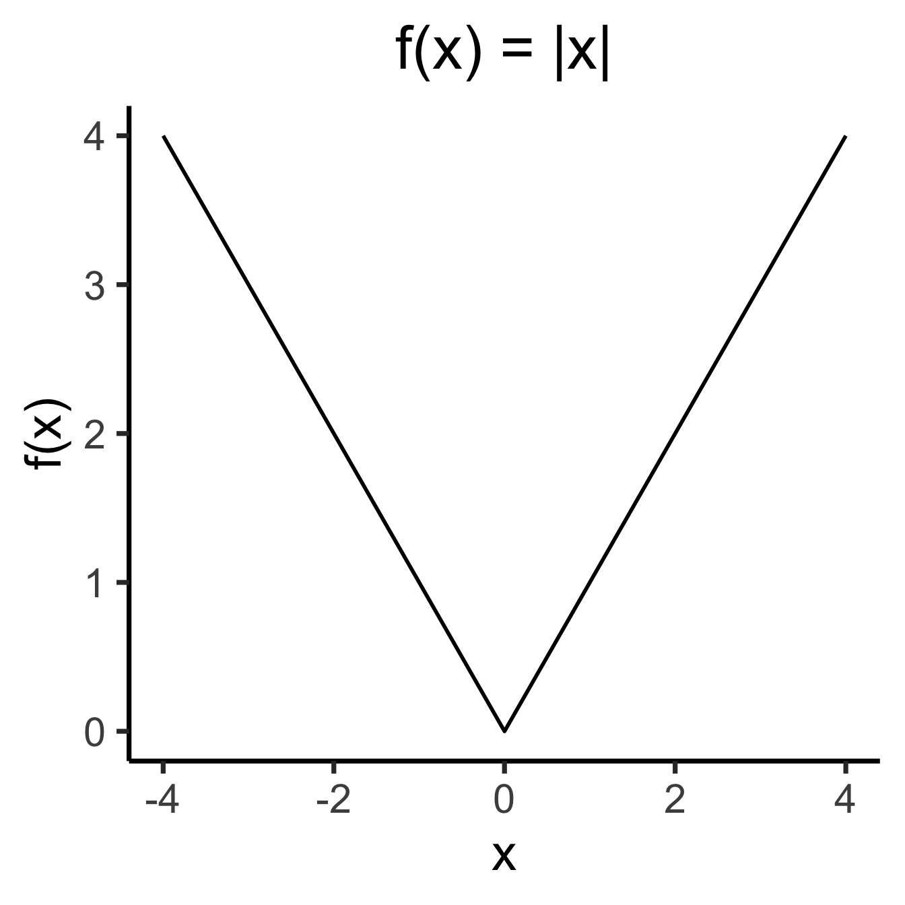
sim_lg_df |> ggplot(aes(x=x, y=y)) +
geom_abline(slope=1, intercept=0, linetype="dashed", color=cbPalette[1], linewidth=g_linewidth) +
# geom_segment(xend=x, yend=x, linewidth=g_linewidth*2, color=cbPalette[2]) +
geom_segment(aes(xend=x, yend=x, color=ifelse(y>x,"Positive","Negative")), linewidth=1.5*g_linewidth) +
geom_point(size=g_pointsize) +
# coord_equal() +
theme_dsan("half") +
scale_color_manual("Spread", values=c("Positive"=cbPalette[3],"Negative"=cbPalette[6]), labels=c("Positive"="Positive","Negative"="Negative")) +
labs(
title = "Regression Line"
)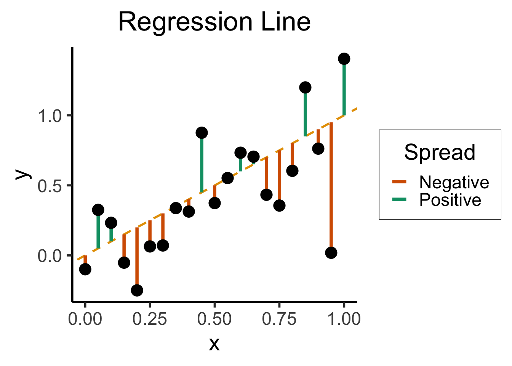
sim_lg_df |> ggplot(aes(x=x, y=y)) +
geom_abline(slope=1, intercept=0, linetype="dashed", color=cbPalette[1], linewidth=g_linewidth) +
# geom_segment(xend=x, yend=x, linewidth=g_linewidth*2, color=cbPalette[2]) +
geom_segment(aes(xend=x, yend=x, color=ifelse(y>x,"Positive","Negative")), linewidth=1.5*g_linewidth) +
geom_point(size=g_pointsize) +
# geom_rect() +
# coord_equal() +
theme_dsan("half") +
scale_color_manual("Spread", values=c("Positive"=cbPalette[3],"Negative"=cbPalette[6]), labels=c("Positive"="Positive","Negative"="Negative")) +
labs(
title = "Regression Line"
)\[ \widehat{y} = \underbrace{\widehat{\beta}_0}_{\mathclap{\small\begin{array}{c}\text{Estimated} \\[-5mm] \text{intercept}\end{array}}} ~+~ \underbrace{\widehat{\beta}_1}_{\mathclap{\small\begin{array}{c}\text{Estimated} \\[-4mm] \text{slope}\end{array}}}\cdot x \]
is chosen so that
\[ \widehat{\theta} = \left(\widehat{\beta}_0, \widehat{\beta}_1\right) = \argmin_{\beta_0, \beta_1}\left[ \sum_{x_i \in X} \left(~~\overbrace{\widehat{y}(x_i)}^{\mathclap{\small\text{Predicted }y}} - \overbrace{\expect{Y \mid X = x_i}}^{\small \text{Avg. }y\text{ when }x = x_i}\right)^{2~} \right] \]
\[ Y = \beta_1 X + \varepsilon \]
library(latex2exp)
set.seed(5300)
# rand_slope <- log(runif(80, min=0, max=1))
# rand_slope[41:80] <- -rand_slope[41:80]
# rand_lines <- tibble::tibble(
# id=1:80, slope=rand_slope, intercept=0
# )
# angles <- runif(100, -pi/2, pi/2)
angles <- seq(from=-pi/2, to=pi/2, length.out=50)
possible_lines <- tibble::tibble(
slope=tan(angles), intercept=0
)
num_points <- 30
x_vals <- runif(num_points, 0, 1)
y0_vals <- 0.5 * x_vals + 0.25
y_noise <- rnorm(num_points, 0, 0.07)
y_vals <- y0_vals + y_noise
rand_df <- tibble::tibble(x=x_vals, y=y_vals)
title_exp <- latex2exp("Parameter Space ($\\beta_1$)")Warning in latex2exp("Parameter Space ($\\beta_1$)"): 'latex2exp' is deprecated.
Use 'TeX' instead.
See help("Deprecated") and help("latex2exp-deprecated").# Main plot object
gen_lines_plot <- function(point_size=2.5) {
lines_plot <- rand_df |> ggplot(aes(x=x, y=y)) +
geom_point(size=point_size) +
geom_hline(yintercept=0, linewidth=1.5) +
geom_vline(xintercept=0, linewidth=1.5) +
# Point at origin
geom_point(data=data.frame(x=0, y=0), aes(x=x, y=y), size=4) +
xlim(-1,1) +
ylim(-1,1) +
# coord_fixed() +
theme_dsan_min(base_size=28)
return(lines_plot)
}
main_lines_plot <- gen_lines_plot()
main_lines_plot +
# Parameter space of possible lines
geom_abline(
data=possible_lines,
aes(slope=slope, intercept=intercept, color='possible'),
# linetype="dotted",
# linewidth=0.75,
alpha=0.25
) +
# True DGP
geom_abline(
aes(
slope=0.5,
intercept=0.25,
color='true'
), linewidth=1, alpha=0.8
) +
scale_color_manual(
element_blank(),
values=c('possible'="black", 'true'=cb_palette[2]),
labels=c('possible'="Possible Fits", 'true'="True DGP")
) +
remove_legend_title() +
labs(
title=title_exp
)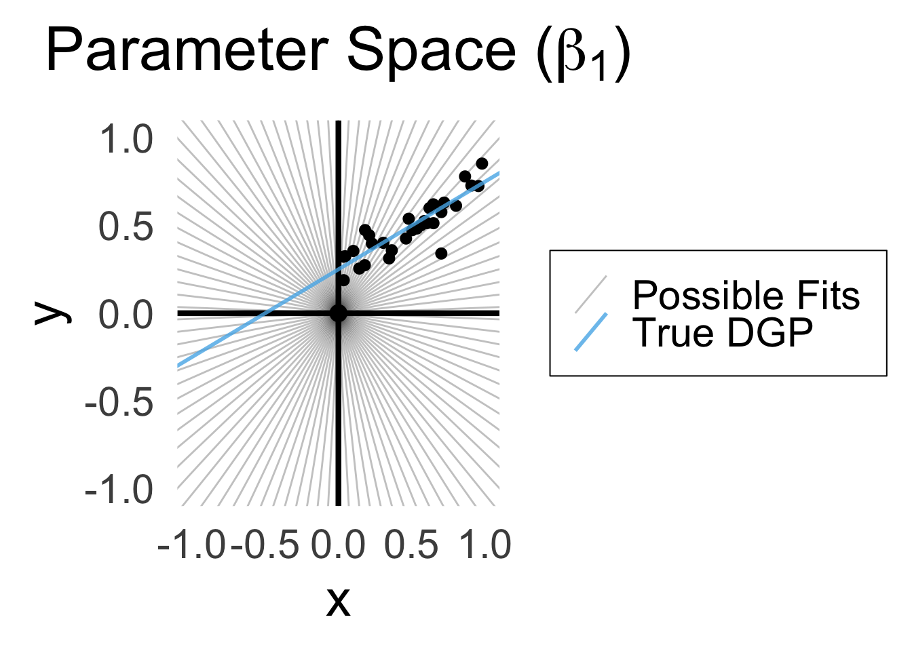
rc1_df <- possible_lines |> slice(n() - 14)
# Predictions for this choice
rc1_pred_df <- rand_df |> mutate(
y_pred = rc1_df$slope * x,
resid = y - y_pred
)
rc1_label <- latex2exp(paste0("Estimate 1: $\\beta_1 \\approx ",round(rc1_df$slope, 3),"$"))Warning in latex2exp(paste0("Estimate 1: $\\beta_1 \\approx ", round(rc1_df$slope, : 'latex2exp' is deprecated.
Use 'TeX' instead.
See help("Deprecated") and help("latex2exp-deprecated").rc1_lines_plot <- gen_lines_plot(point_size=5)
rc1_lines_plot +
geom_abline(
data=rc1_df,
aes(intercept=intercept, slope=slope),
linewidth=2,
color=cb_palette[1]
) +
geom_segment(
data=rc1_pred_df,
aes(x=x, y=y, xend=x, yend=y_pred),
# color=cb_palette[1]
) +
xlim(0, 1) + ylim(0, 1) +
labs(
title = rc1_label
)Scale for x is already present.
Adding another scale for x, which will replace the existing scale.
Scale for y is already present.
Adding another scale for y, which will replace the existing scale.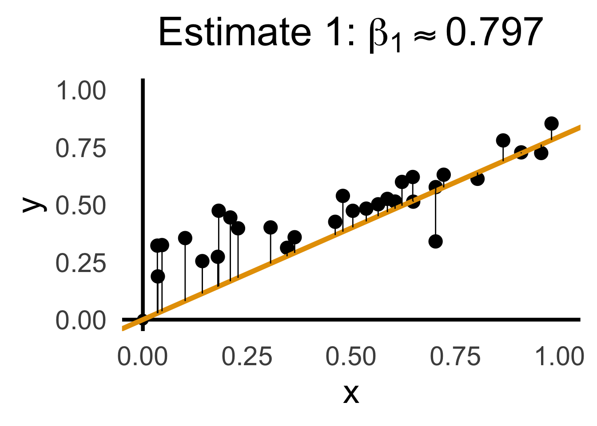
gen_resid_plot <- function(pred_df) {
rc_rss <- sum((pred_df$resid)^2)
rc_resid_label <- latex2exp(paste0("Residuals: RSS $\\approx$ ",round(rc_rss,3)))
rc_resid_plot <- pred_df |> ggplot(aes(x=x, y=resid)) +
geom_point(size=5) +
geom_hline(
yintercept=0,
color=cb_palette[1],
linewidth=1.5
) +
geom_segment(
aes(xend=x, yend=0)
) +
theme_dsan(base_size=28) +
theme(axis.line.x = element_blank()) +
labs(
title=rc_resid_label
)
return(rc_resid_plot)
}
rc1_resid_plot <- gen_resid_plot(rc1_pred_df)Warning in latex2exp(paste0("Residuals: RSS $\\approx$ ", round(rc_rss, : 'latex2exp' is deprecated.
Use 'TeX' instead.
See help("Deprecated") and help("latex2exp-deprecated").rc1_resid_plot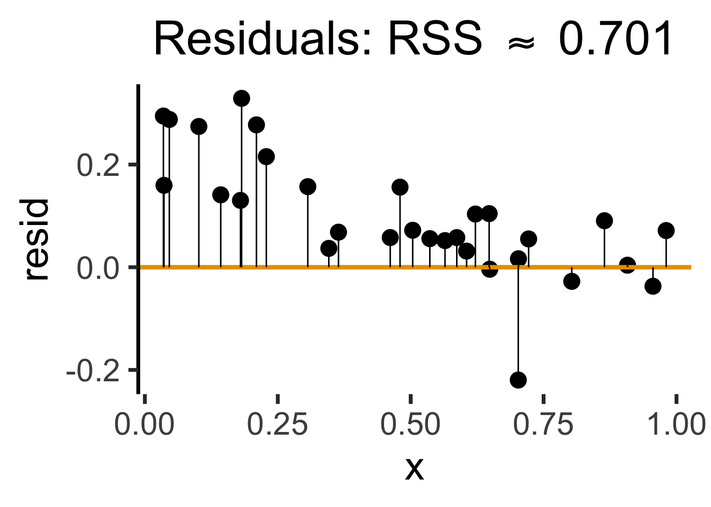
rc2_df <- possible_lines |> slice(n() - 9)
# Predictions for this choice
rc2_pred_df <- rand_df |> mutate(
y_pred = rc2_df$slope * x,
resid = y - y_pred
)
rc2_label <- latex2exp(paste0("Estimate 2: $\\beta_1 \\approx ",round(rc2_df$slope,3),"$"))Warning in latex2exp(paste0("Estimate 2: $\\beta_1 \\approx ", round(rc2_df$slope, : 'latex2exp' is deprecated.
Use 'TeX' instead.
See help("Deprecated") and help("latex2exp-deprecated").rc2_lines_plot <- gen_lines_plot(point_size=5)
rc2_lines_plot +
geom_abline(
data=rc2_df,
aes(intercept=intercept, slope=slope),
linewidth=2,
color=cb_palette[3]
) +
geom_segment(
data=rc2_pred_df,
aes(
x=x, y=y, xend=x,
yend=ifelse(y_pred <= 1, y_pred, Inf)
)
# color=cb_palette[1]
) +
xlim(0, 1) + ylim(0, 1) +
labs(
title=rc2_label
)Scale for x is already present.
Adding another scale for x, which will replace the existing scale.
Scale for y is already present.
Adding another scale for y, which will replace the existing scale.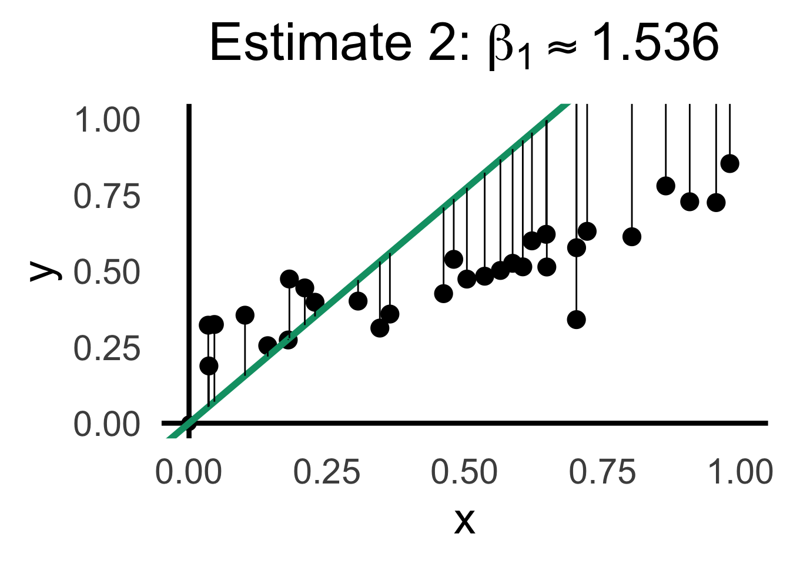
rc2_resid_plot <- gen_resid_plot(rc2_pred_df)Warning in latex2exp(paste0("Residuals: RSS $\\approx$ ", round(rc_rss, : 'latex2exp' is deprecated.
Use 'TeX' instead.
See help("Deprecated") and help("latex2exp-deprecated").rc2_resid_plot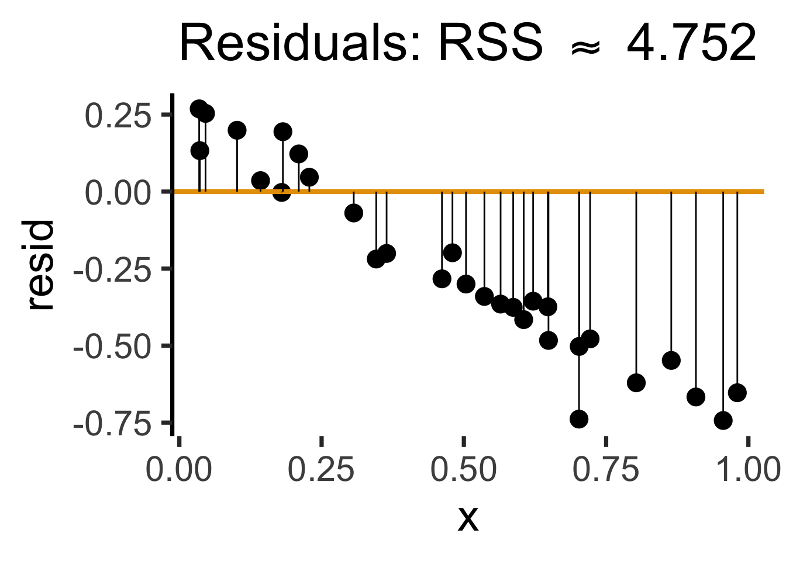
\[ \begin{align*} \beta_1^* = \argmin_{\beta_1}\left[ \sum_{i=1}^{n}(\widehat{y}_i - y_i)^2 \right] = \argmin_{\beta_1}\left[ \sum_{i=1}^{n}(\beta_1x_i - y_i)^2 \right] \end{align*} \]
We can compute this derivative to obtain:
\[ \frac{\partial}{\partial\beta_1}\left[ \sum_{i=1}^{n}(\beta_1x_i - y_i)^2 \right] = \sum_{i=1}^{n}\frac{\partial}{\partial\beta_1}(\beta_1x_i - y_i)^2 = \sum_{i=1}^{n}2(\beta_1x_i - y_i)x_i \]
And our first-order condition means that:
\[ \sum_{i=1}^{n}2(\beta_1^*x_i - y_i)x_i = 0 \iff \beta_1^*\sum_{i=1}^{n}x_i^2 = \sum_{i=1}^{n}x_iy_i \iff \boxed{\beta_1^* = \frac{\sum_{i=1}^{n}x_iy_i}{\sum_{i=1}^{n}x_i^2}} \]
R vs. statsmodelslm()
lin_model <- lm(sales ~ TV, data=ad_df)
summary(lin_model)
Call:
lm(formula = sales ~ TV, data = ad_df)
Residuals:
Min 1Q Median 3Q Max
-8.3860 -1.9545 -0.1913 2.0671 7.2124
Coefficients:
Estimate Std. Error t value Pr(>|t|)
(Intercept) 7.032594 0.457843 15.36 <2e-16 ***
TV 0.047537 0.002691 17.67 <2e-16 ***
---
Signif. codes: 0 '***' 0.001 '**' 0.01 '*' 0.05 '.' 0.1 ' ' 1
Residual standard error: 3.259 on 198 degrees of freedom
Multiple R-squared: 0.6119, Adjusted R-squared: 0.6099
F-statistic: 312.1 on 1 and 198 DF, p-value: < 2.2e-16General syntax:
lm(
dependent ~ independent + controls,
data = my_df
)smf.ols()
import statsmodels.formula.api as smf
results = smf.ols("sales ~ TV", data=ad_df).fit()
print(results.summary(slim=True)) OLS Regression Results
==============================================================================
Dep. Variable: sales R-squared: 0.612
Model: OLS Adj. R-squared: 0.610
No. Observations: 200 F-statistic: 312.1
Covariance Type: nonrobust Prob (F-statistic): 1.47e-42
==============================================================================
coef std err t P>|t| [0.025 0.975]
------------------------------------------------------------------------------
Intercept 7.0326 0.458 15.360 0.000 6.130 7.935
TV 0.0475 0.003 17.668 0.000 0.042 0.053
==============================================================================
Notes:
[1] Standard Errors assume that the covariance matrix of the errors is correctly specified.General syntax:
smf.ols(
"dependent ~ independent + controls",
data = my_df
)Call:
lm(formula = military ~ industrial, data = gdp_df)
Residuals:
Min 1Q Median 3Q Max
-2.3354 -1.0997 -0.3870 0.6081 6.7508
Coefficients:
Estimate Std. Error t value Pr(>|t|)
(Intercept) 0.61969 0.59526 1.041 0.3010
industrial 0.05253 0.02019 2.602 0.0111 *
--- Signif. codes: 0 '***' 0.001 '**' 0.01 '*' 0.05 '.' 0.1 ' ' 1 Residual standard error: 1.671 on 79 degrees of freedom (8 observations deleted due to missingness) Multiple R-squared: 0.07895, Adjusted R-squared: 0.06729 F-statistic: 6.771 on 1 and 79 DF, p-value: 0.01106
| Estimate | Std. Error | t value | Pr(>|t|) | ||
|---|---|---|---|---|---|
| (Intercept) | 0.61969 | 0.59526 | 1.041 | 0.3010 | |
| industrial | 0.05253 | 0.02019 | 2.602 | 0.0111 | * |
| \(\widehat{\beta}\) | Uncertainty | Test stat \(t\) | How extreme is \(t\)? | Signif. Level |
\[ \widehat{y} \approx \class{cb1}{\overset{\beta_0}{\underset{\small \pm 0.595}{0.620}}} + \class{cb2}{\overset{\beta_1}{\underset{\small \pm 0.020}{0.053}}} \cdot x \]
| Estimate | Std. Error | t value | Pr(>|t|) | ||
|---|---|---|---|---|---|
| (Intercept) | 0.61969 | 0.59526 | 1.041 | 0.3010 | |
| industrial | 0.05253 | 0.02019 | 2.602 | 0.0111 | * |
| \(\widehat{\beta}\) | Uncertainty | Test stat \(t\) | How extreme is \(t\)? | Signif. Level |
library(ggplot2)
int_tstat <- 1.041
int_tstat_str <- sprintf("%.02f", int_tstat)
label_df_int <- tribble(
~x, ~y, ~label,
0.25, 0.05, paste0("P(t > ",int_tstat_str,")\n= 0.3")
)
label_df_signif_int <- tribble(
~x, ~y, ~label,
2.7, 0.075, "95% Signif.\nCutoff"
)
funcShaded <- function(x, lower_bound, upper_bound){
y <- dnorm(x)
y[x < lower_bound | x > upper_bound] <- NA
return(y)
}
funcShadedIntercept <- function(x) funcShaded(x, int_tstat, Inf)
funcShadedSignif <- function(x) funcShaded(x, 1.96, Inf)
ggplot(data=data.frame(x=c(-3,3)), aes(x=x)) +
stat_function(fun=dnorm, linewidth=g_linewidth) +
geom_vline(aes(xintercept=int_tstat), linewidth=g_linewidth) +
geom_vline(aes(xintercept = 1.96), linewidth=g_linewidth, linetype="dashed") +
stat_function(fun = funcShadedIntercept, geom = "area", fill = cbPalette[1], alpha = 0.5) +
stat_function(fun = funcShadedSignif, geom = "area", fill = "grey", alpha = 0.333) +
geom_text(label_df_int, mapping = aes(x = x, y = y, label = label), size = 10) +
geom_text(label_df_signif_int, mapping = aes(x = x, y = y, label = label), size = 8) +
# Add single additional tick
scale_x_continuous(breaks=c(-2, 0, int_tstat, 2), labels=c("-2","0",int_tstat_str,"2")) +
dsan_theme("quarter") +
labs(
title = "t Value for Intercept",
x = "t",
y = "Density"
) +
theme(axis.text.x = element_text(colour = c("black", "black", cbPalette[1], "black")))Warning: Vectorized input to `element_text()` is not officially supported.
ℹ Results may be unexpected or may change in future versions of ggplot2.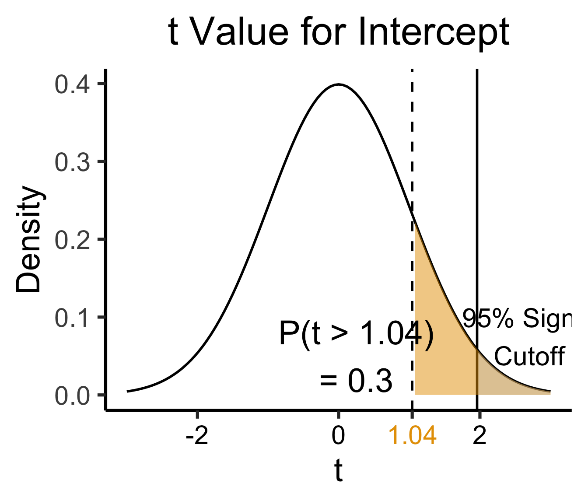
library(ggplot2)
coef_tstat <- 2.602
coef_tstat_str <- sprintf("%.02f", coef_tstat)
label_df_coef <- tribble(
~x, ~y, ~label,
3.65, 0.06, paste0("P(t > ",coef_tstat_str,")\n= 0.01")
)
label_df_signif_coef <- tribble(
~x, ~y, ~label,
1.05, 0.03, "95% Signif.\nCutoff"
)
funcShadedCoef <- function(x) funcShaded(x, coef_tstat, Inf)
ggplot(data=data.frame(x=c(-4,4)), aes(x=x)) +
stat_function(fun=dnorm, linewidth=g_linewidth) +
geom_vline(aes(xintercept=coef_tstat), linetype="solid", linewidth=g_linewidth) +
geom_vline(aes(xintercept=1.96), linetype="dashed", linewidth=g_linewidth) +
stat_function(fun = funcShadedCoef, geom = "area", fill = cbPalette[2], alpha = 0.5) +
stat_function(fun = funcShadedSignif, geom = "area", fill = "grey", alpha = 0.333) +
# Label shaded area
geom_text(label_df_coef, mapping = aes(x = x, y = y, label = label), size = 10) +
# Label significance cutoff
geom_text(label_df_signif_coef, mapping = aes(x = x, y = y, label = label), size = 8) +
coord_cartesian(clip = "off") +
# Add single additional tick
scale_x_continuous(breaks=c(-4, -2, 0, 2, coef_tstat, 4), labels=c("-4", "-2","0", "2", coef_tstat_str,"4")) +
dsan_theme("quarter") +
labs(
title = "t Value for Coefficient",
x = "t",
y = "Density"
) +
theme(axis.text.x = element_text(colour = c("black", "black", "black", "black", cbPalette[2], "black")))Warning: Vectorized input to `element_text()` is not officially supported.
ℹ Results may be unexpected or may change in future versions of ggplot2.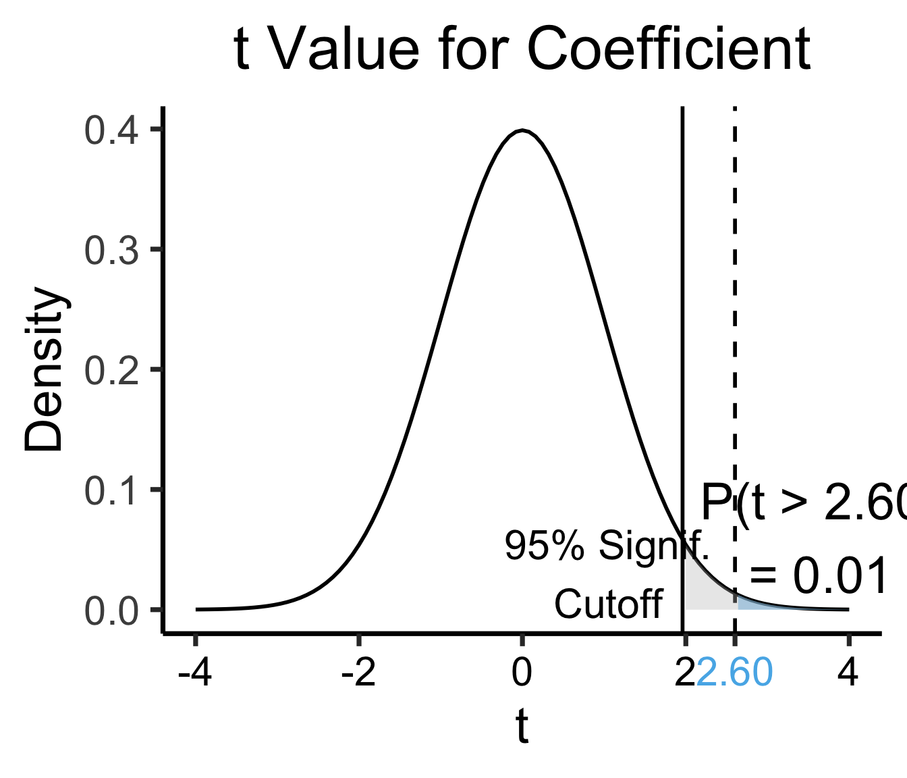
library(broom)
gdp_resid_df <- augment(lin_model)
ggplot(gdp_resid_df, aes(x = .fitted, y = .resid)) +
geom_point(size = g_pointsize/2) +
geom_hline(yintercept=0, linetype="dashed") +
dsan_theme("quarter") +
labs(
title = "Residual Plot for Industrial ~ Military",
x = "Fitted Value",
y = "Residual"
)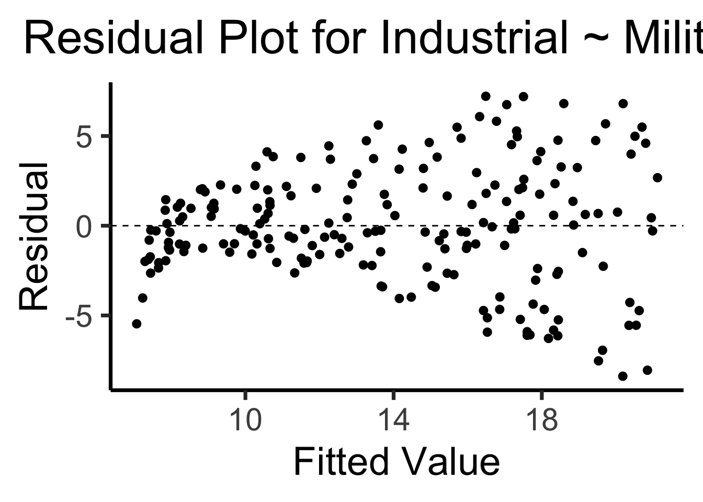
x <- 1:80
errors <- rnorm(length(x), 0, x^2/1000)
y <- x + errors
het_model <- lm(y ~ x)
df_het <- augment(het_model)
ggplot(df_het, aes(x = .fitted, y = .resid)) +
geom_point(size = g_pointsize / 2) +
geom_hline(yintercept = 0, linetype = "dashed") +
dsan_theme("quarter") +
labs(
title = "Residual Plot for Heteroskedastic Data",
x = "Fitted Value",
y = "Residual"
)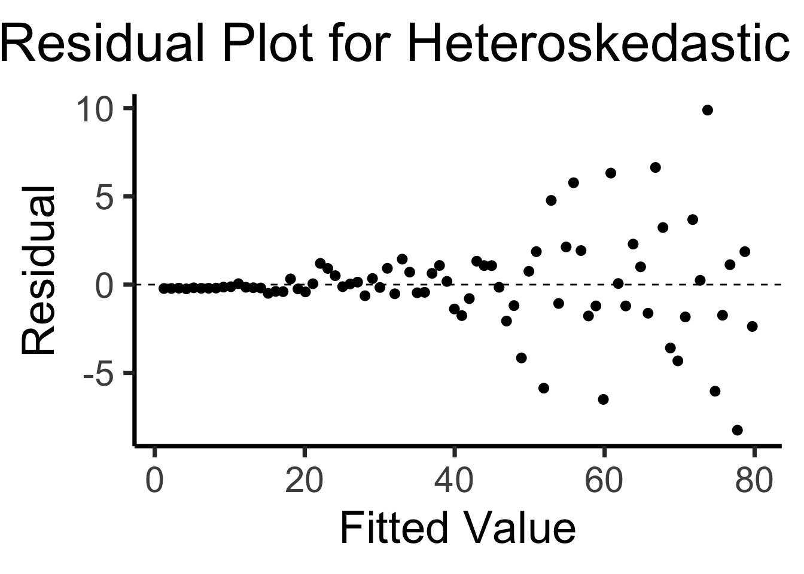
ggplot(df_het, aes(sample=.resid)) +
stat_qq(size = g_pointsize/2) + stat_qq_line(linewidth = g_linewidth) +
dsan_theme("half") +
labs(
title = "Q-Q Plot for Heteroskedastic Data",
x = "Normal Distribution Quantiles",
y = "Observed Data Quantiles"
)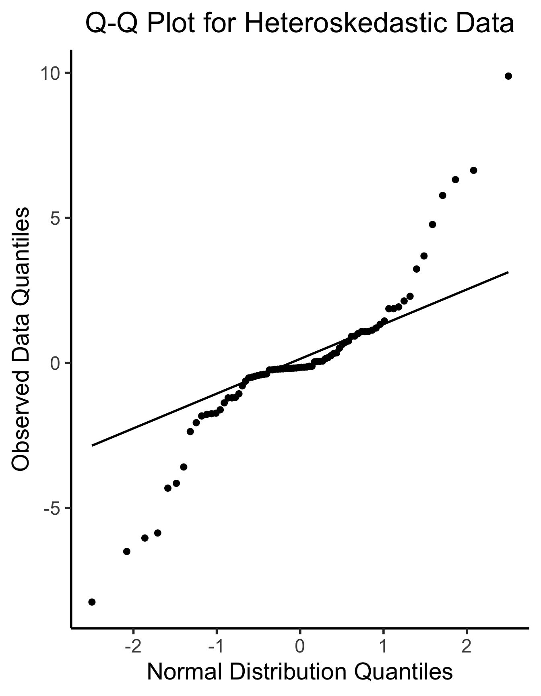
ggplot(gdp_resid_df, aes(sample=.resid)) +
stat_qq(size = g_pointsize/2) + stat_qq_line(linewidth = g_linewidth) +
dsan_theme("half") +
labs(
title = "Q-Q Plot for Industrial ~ Military Residuals",
x = "Normal Distribution Quantiles",
y = "Observed Data Quantiles"
)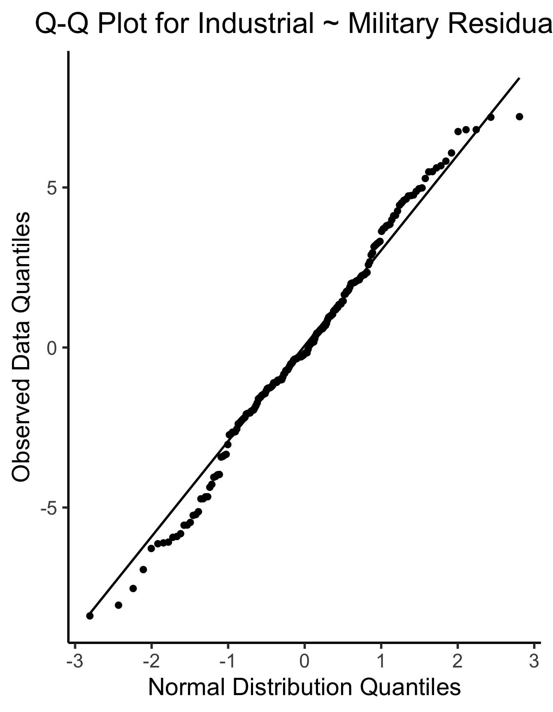
\[ \widehat{y}_i = \beta_0 + \beta_1x_{i,1} + \beta_2x_{i,2} + \cdots + \beta_M x_{i,M} \]